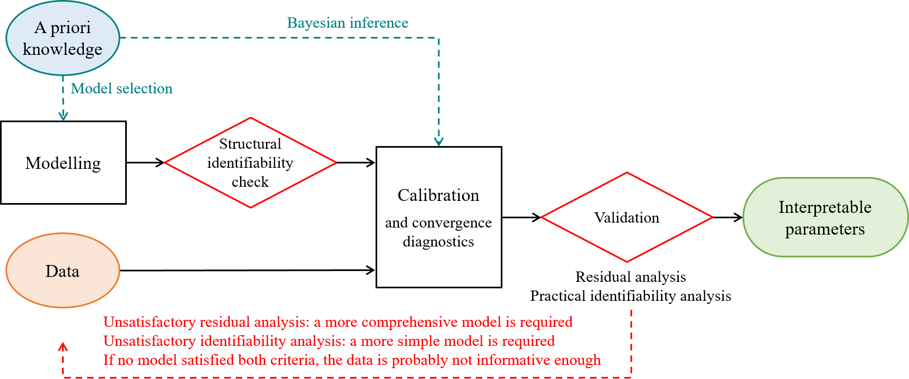

This category is a series of tutorials on state-space models for building energy performance assessment. They are meant to progressively introduce these models, from very simple principles to more complex and flexible statistical models.
- Introduction to the workflow of model calibration, using the most simple RC model structure to describe the heat dynamics of a building.
- Description of stochastic state-space models and the Kalman filter, as a way to account for modelling uncertainties in the inference process.
- Presentation of the pySIP library, a powerful and flexible way to perform inference and prediction with state-space model.
- Introduction to Latent Force Models, the next step into accounting for discrepancies between simple models and complex buildings.
This series will be extended in the future, in order to demonstrate important steps in the workflow of (Bayesian or frequentist) inference for building energy performance assessment: validation, identifiability analysis, model selection…
